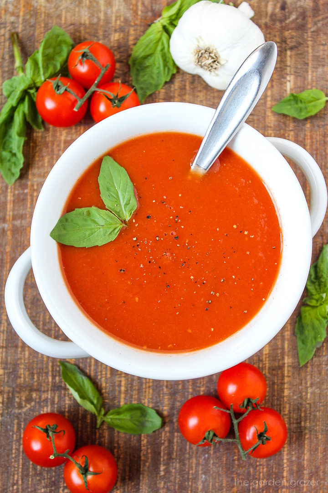

Home
Tomato Soup

Description
This dish features a rich and creamy tomato soup, perfect for a comforting meal.
It is a popular dish in many cultures, especially during colder months.
Ingredients
- 4 large tomatoes, chopped
- 1 onion, chopped
- 2 cloves garlic, minced
- 1 tablespoon olive oil
- 2 cups vegetable broth
- 1 teaspoon sugar
- Salt and pepper to taste
- 1/4 cup heavy cream (optional)
- Fresh basil leaves for garnish
Instructions
- Heat olive oil in a pot over medium heat.
- Add chopped onions and garlic, sauté until translucent.
- Add chopped tomatoes and cook for about 10 minutes until soft.
- Pour in vegetable broth and add sugar, salt, and pepper.
- Simmer for 15-20 minutes, then blend until smooth.
- If desired, stir in heavy cream for a richer flavor.
- Serve hot, garnished with fresh basil leaves.